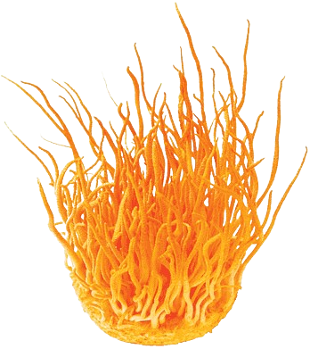

What is the Last Of Us?
Post-apocalyptic world where a fungal virus has infected the globe
What are the zombies and how is it connected to bio?
The fungal virus converts humans into "zombies" that are hostile and
quickly bring the downfall of humanity
Science
-
The fungus in the game is most similar to and inspired by Cordyceps
(Ophiocordyceps unilateralis).
-
In nature the spores of the cordyceps take control of their host's
mind and motor functions, usually insects.
-
Once infected by the fungus it will drain all nutrients in the host
and fill it with spores. It then manipulates its movements to seek
higher ground where the spores leak out of the host, hoping to
spread the spores to other insects.
-
The process in which cordyceps hijack neural and motor functions is
by secreting neuromodulatory agents around the central and
peripheral nervous system. Along with this process, it also contains
bacteria that stop the chemical signaling ants use to communicate
with one another
-
Infected insects usually develop biting behavior which is a likely
inspiration for the Last of Us zombies, but cordyceps is not known
to increase host hostility.

Humans Effect
So why does it not affect us?
-
Our effective immune system and our body temperature stop the fungi
from growing.
-
Cordyceps have evolved to specifically target insects like ants.
-
Keep in mind that our immune system is not impervious to fungal
infection, for example many humans get athletes' feet or ringworms. It
is just the case that cordyceps is not adapted for humans.
Hypothetical Scenario
-
A cordyceps fungus evolved to infect humans would force the host's
body to produce massive amounts of infectious spores.
-
Infected people would be driven to high altitudes by the fungus,
helping to spread spores through the air over vast areas.
-
Any physical trauma or ruptures to infected hosts would release
concentrated spore loads into the environment.
-
Incineration may be the only way to fully destroy fungal bodies acting
as spore sacs within human hosts.
-
With an airborne, persistent infectivity, such an outbreak could
rapidly become an uncontrolled pandemic.
-
Infected people would be nothing like the hostile zombies in The Last
of Us.
-
While this scenario has speculative elements, it is based on the
real-world characteristics of the cordyceps fungus.